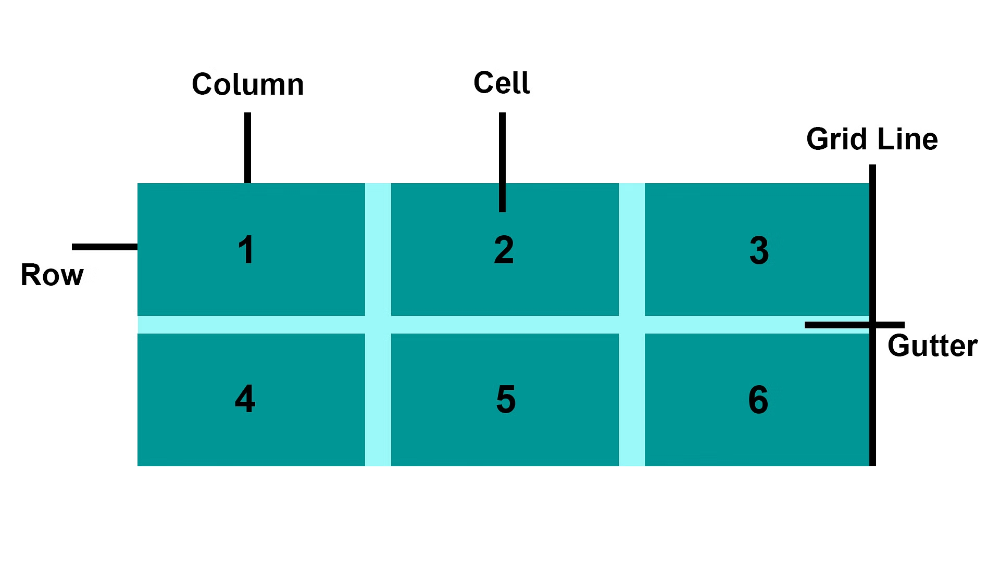
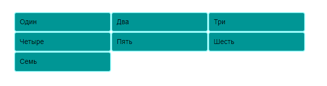
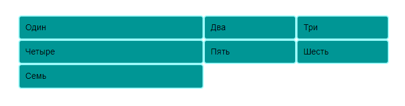
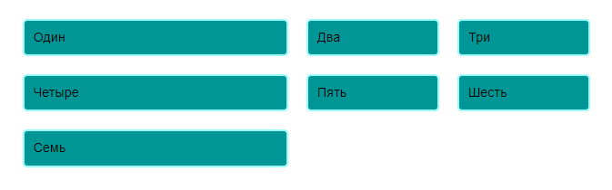
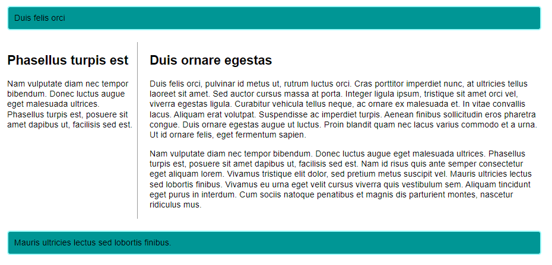
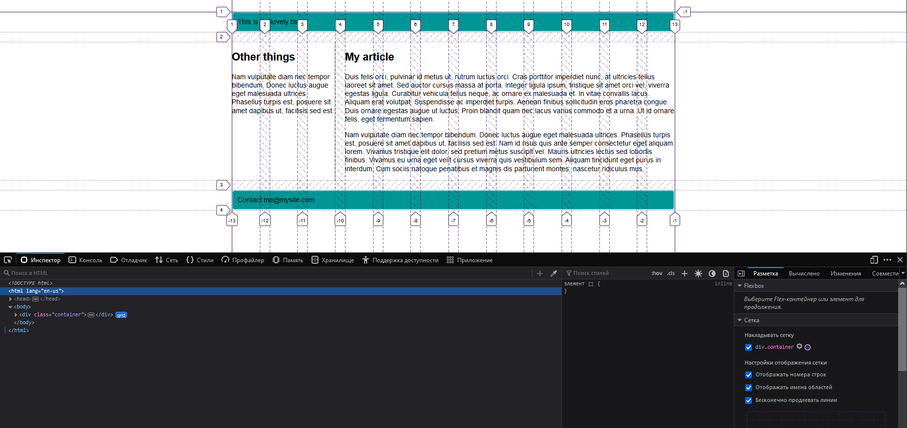

Что такое CSS Grid?
Сетка представляет собой комбинацию горизонтальных и вертикальных линий, образующих основу, по которой мы можем выравнивать компоненты дизайна. Ее назначение - облегчить создание макетов, в которых элементы сохраняют последовательное выравнивание и переход по ширине на разных страницах, что повышает единообразие наших сайтов. Как правило, сетка включает в себя столбцы, строки и промежутки между строками и столбцами, которые обычно называют Gutters (или просто отступы).
Использование Grid в CSS
После того как вы выбрали сетку, подходящую для вашего дизайна, вы можете использовать CSS Grid Layout для ее создания. Вначале мы рассмотрим фундаментальные аспекты Grid Layout, а затем углубимся в процесс создания простой системы сетки для вашего проекта.
Определение сетки
Давайте поэкспериментируем с макетами сетки на примере. Откройте следующий пример в текстовом редакторе:
<!DOCTYPE html>
<html lang="en-us">
<head>
<meta charset="utf-8">
<meta name="viewport" content="width=device-width">
<title>CSS Grid starting point</title>
<style>
body {
width: 90%;
max-width: 900px;
margin: 2em auto;
font: .9em/1.2 Arial, Helvetica, sans-serif;
}
.container > div {
border-radius: 5px;
padding: 10px;
background-color: #009695;
border: 2px solid #9bf9f9;
}
</style>
</head>
<body>
<h1>Simple grid example</h1>
<div class="container">
<div>Один</div>
<div>Два</div>
<div>Три</div>
<div>Четыре</div>
<div>Пять</div>
<div>Шесть</div>
<div>Семь</div>
</div>
</body>
</html>
Как вы видите в этом коде есть контейнер, содержащий несколько дочерних элементов. По умолчанию эти элементы представлены в стандартном потоке, что приводит к вертикальному расположению. В первой части этого руководства мы будем использовать этот файл для наблюдения за поведением сетки.
Подобно тому, как вы задаете flexbox, присваивая свойству display значение grid. Как и в случае с flexbox, использование свойства display: grid превращает все ближайшие дочерние элементы контейнера в элементы сетки. Включите предоставленный CSS в свой файл:
.container {
display: grid;
}
В отличие от Flexbox, визуальное изменение элементов происходит не сразу. Указание display: grid приводит к созданию одноколоночной сетки, сохраняя отображение элементов в вертикальном расположении, подобно обычному потоку.
Чтобы добиться более похожего на сетку вида, необходимо ввести в сетку столбцы. Давайте создадим три колонки, каждая из которых будет иметь размер 200 пикселей. Вы можете использовать любую единицу длины или процент для построения этих столбцов.
.container {
display: grid;
grid-template-columns: 200px 200px 200px;
}
Внесите правило CSS и обновите страницу. Вы должны заметить, что элементы перегруппированы, и каждый из них занимает свою ячейку в сетке.
Гибкие сетки с единицами измерения fr
Помимо построения сетки с помощью длин и процентов, у нас есть возможность использовать единицы измерения "fr". Единица "fr" символизирует долю доступного пространства в контейнере сетки, что позволяет гибко изменять размеры как строк, так и столбцов сетки.
Измените спецификацию дорожек в соответствии с последующим определением, создав три дорожки размером 1 fr каждая:
.container {
display: grid;
grid-template-columns: 1fr 1fr 1fr;
}
Теперь у вас есть адаптируемые дорожки. Блок "fr" распределяет пространство пропорционально. Вы можете задать различные положительные значения для дорожек следующим образом:
.container {
display: grid;
grid-template-columns: 2fr 1fr 1fr;
}
Первая дорожка получает 2fr из имеющегося пространства, а последующие две дорожки получают по 1fr, в результате чего первая дорожка увеличивается. Можно комбинировать блоки "fr" с блоками фиксированной длины. В этом случае сначала выделяется пространство, необходимое для фиксированных дорожек, а затем избыточное пространство распределяется между другими дорожками.
Промежутки между дорожками
Чтобы определить промежутки между дорожками, мы используем следующие свойства:
- column-gap - для промежутков между столбцами
- row-gap - для промежутков между строчками
- gap - для промежутков между между столбцами и строчками
.container {
display: grid;
grid-template-columns: 2fr 1fr 1fr;
gap: 20px;
}
Эти промежутки могут принимать любую единицу длины или процентное соотношение; однако они не могут быть указаны в единицах "fr".
Повторяющиеся размеры дорожек
У вас есть возможность воспроизвести весь список размеров дорожек или только его часть с помощью функции CSS repeat(). Измените определение размеров столбцов, приведя ее к следующему виду:
.container {
display: grid;
grid-template-columns: repeat(3, 1fr);
gap: 20px;
}
Теперь вы получите три дорожки по 1 кадру, аналогично предыдущей конфигурации. Начальный параметр функции repeat() указывает, сколько раз вы хотите повторить листинг, а второй параметр содержит количество дорожек, которые вы хотите повторить.
Явные и неявные сетки
До сих пор мы определяли только дорожки столбцов, а строки генерировались автоматически для размещения содержимого. Это подчеркивает разницу между явными и неявными сетками. Давайте немного углубимся в различие между этими двумя типами сеток:
- Явная сетка создаётся с помощью grid-template-columns или grid-template-rows
- Неявная сетка расширяется за пределы явно заданной сетки, когда содержимое размещается за ее пределами, например, расширяется в строках, вводя дополнительные линии сетки.
По умолчанию дорожки, сгенерированные в неявной сетке, имеют автоматический размер, обычно обеспечивающий достаточную площадь для размещения их содержимого. Если вы хотите присвоить дорожкам неявной сетки определенный размер, вы можете использовать свойства grid-auto-rows и grid-auto-columns. Например, включение в CSS свойства grid-auto-rows со значением 100px приведет к тому, что вновь созданные строки будут иметь высоту 100 пикселей.
.container {
display: grid;
grid-template-columns: repeat(3, 1fr);
grid-auto-rows: 100px;
gap: 20px;
}
Функция minmax()
Дорожки высотой 100 пикселей каждая могут оказаться непрактичными при вставке содержимого, превышающего 100 пикселей, что может привести к проблемам переполнения. Возможно, будет выгоднее иметь дорожки с минимальной высотой 100 пикселей, которые могут расширяться по мере добавления контента. Основополагающим аспектом Интернета является неопределенность в отношении точной высоты элементов - дополнительный контент или увеличенный размер шрифта могут создать проблемы для дизайнеров, стремящихся к пиксельному совершенству в каждом измерении.
Функция minmax() позволяет задать минимальный и максимальный размер дорожки, как, например, в случае minmax(100px, auto). Здесь минимальный размер установлен на 100 пикселей, а максимальный - на auto, что позволяет расширять дорожку для размещения дополнительного контента. Поэкспериментируйте с изменением сетки-авто-строки, чтобы использовать значение minmax:
.container {
display: grid;
grid-template-columns: repeat(3, 1fr);
grid-auto-rows: minmax(100px, auto);
gap: 20px;
}
Когда вы добавляете дополнительный контент, вы увидите, что дорожка расширяется, чтобы вместить его. Важно отметить, что это расширение происходит непосредственно вдоль строки.
Столбцов столько, сколько поместится
Мы можем объединить несколько понятий о списках треков, нотации повторов и minmax(), чтобы разработать практический шаблон. Иногда полезно дать гриду указание генерировать столько столбцов, сколько может поместиться в контейнере. Это достигается путем настройки значения grid-template-columns с помощью функции repeat(). Вместо того чтобы указывать числовое значение, используйте ключевое слово auto-fit в качестве первого параметра функции. Для второго параметра используйте minmax() с минимальным значением, эквивалентным желаемому минимальному размеру дорожки, и максимальным значением 1fr.
Реализуйте это в своем файле, используя предоставленный CSS:
.container {
display: grid;
grid-template-columns: repeat(auto-fit, minmax(200px, 1fr));
grid-auto-rows: minmax(100px, auto);
gap: 20px;
}
Это работает эффективно, потому что сетка генерирует столько 200-пиксельных столбцов, сколько может быть размещено в контейнере. Затем оставшееся пространство распределяется между всеми столбцами. Максимальное значение - 1fr, что, как мы знаем, равномерно распределяет пространство между дорожками.
Размещение элементов по Grid-линиям
Пройдя этап создания сетки, мы теперь сосредоточимся на размещении элементов на ней. Сетка состоит из строк, пронумерованных от 1, и их ориентация соответствует режиму написания документа. Например, в английском языке (пишется слева направо) столбец строки 1 находится слева, а строка строки 1 - сверху. В арабском языке (пишется справа налево) строка столбца 1 находится справа.
Чтобы расположить элементы на этих строках, мы можем указать начальную и конечную строки области сетки, в которой должен находиться элемент. Этому способствуют четыре свойства:
- grid-column-start
- grid-column-end
- grid-row-start
- grid-row-end
Эти свойства принимают номера строк в качестве значений, что позволяет нам объявить, что элемент должен начинаться со строки 1 и заканчиваться, например, на строке 3. В качестве альтернативы можно использовать сокращенные свойства, позволяющие одновременно указывать начальную и конечную строки, разделенные прямой косой чертой (/):
- grid-column
- grid-row
Чтобы увидеть это в действии введите следующий код:
<!DOCTYPE html>
<html lang="en-us">
<head>
<meta charset="utf-8" />
<meta name="viewport" content="width=device-width" />
<title>CSS Grid - line-based placement starting point</title>
</head>
<body>
<div class="container">
<header>Duis felis orci</header>
<article>
<h1>Duis ornare egestas</h1>
<p>
Duis felis orci, pulvinar id metus ut, rutrum luctus orci. Cras
porttitor imperdiet nunc, at ultricies tellus laoreet sit amet. Sed
auctor cursus massa at porta. Integer ligula ipsum, tristique sit amet
orci vel, viverra egestas ligula. Curabitur vehicula tellus neque, ac
ornare ex malesuada et. In vitae convallis lacus. Aliquam erat
volutpat. Suspendisse ac imperdiet turpis. Aenean finibus sollicitudin
eros pharetra congue. Duis ornare egestas augue ut luctus. Proin
blandit quam nec lacus varius commodo et a urna. Ut id ornare felis,
eget fermentum sapien.
</p>
<p>
Nam vulputate diam nec tempor bibendum. Donec luctus augue eget
malesuada ultrices. Phasellus turpis est, posuere sit amet dapibus ut,
facilisis sed est. Nam id risus quis ante semper consectetur eget
aliquam lorem. Vivamus tristique elit dolor, sed pretium metus
suscipit vel. Mauris ultricies lectus sed lobortis finibus. Vivamus eu
urna eget velit cursus viverra quis vestibulum sem. Aliquam tincidunt
eget purus in interdum. Cum sociis natoque penatibus et magnis dis
parturient montes, nascetur ridiculus mus.
</p>
</article>
<aside>
<h2>Phasellus turpis est</h2>
<p>
Nam vulputate diam nec tempor bibendum. Donec luctus augue eget
malesuada ultrices. Phasellus turpis est, posuere sit amet dapibus ut,
facilisis sed est.
</p>
</aside>
<footer>Mauris ultricies lectus sed lobortis finibus.</footer>
</div>
</body>
</html>
Файл включает в себя определенную сетку и простую статью с контурами, демонстрирующую автоматическое размещение, которое помещает каждый элемент в определенную ячейку сетки.
Теперь давайте расположим все элементы нашего сайта, используя линии сетки. Добавьте следующие правила в конец вашего CSS:
header {
grid-column: 1 / 3;
grid-row: 1;
}
article {
grid-column: 2;
grid-row: 2;
}
aside {
grid-column: 1;
grid-row: 2;
}
footer {
grid-column: 1 / 3;
grid-row: 3;
}
Позиционирование с помощью grid-template-areas
Альтернативный метод организации элементов в сетке предполагает использование свойства grid-template-areas и присвоение различных имен элементам дизайна.
Отмените позиционирование на основе линий из предыдущего примера и вставьте следующий CSS.
.container {
display: grid;
grid-template-areas:
"header header"
"sidebar content"
"footer footer";
grid-template-columns: 1fr 3fr;
gap: 20px;
}
header {
grid-area: header;
}
article {
grid-area: content;
}
aside {
grid-area: sidebar;
}
footer {
grid-area: footer;
}
Перезагрузив страницу, вы заметите, что ваши элементы расположились точно так же, как и раньше, без необходимости использовать номера строк.
Рекомендации по использованию grid-template-areas следующие:
- Убедитесь, что каждая ячейка сетки занята.
- Чтобы разделить две ячейки, продублируйте присвоенное имя.
- Для пустой ячейки используйте символ "." (точка).
- Области должны быть прямоугольной формы; например, L-образная область недопустима.
- Области не могут быть продублированы в разных местах.
Можете экспериментировать с макетом, например, располагать нижний колонтитул исключительно под статьей или растягивать боковую панель по всей высоте. Такой подход служит четким и лаконичным методом описания макета, так как с помощью CSS становится ясно, что происходит.
Вложение сеток и подсеток
Можно включить сетку в другую сетку, сформировав "подсетку". Этого можно добиться, применив к элементу сетки свойство display: grid.
Давайте подробнее рассмотрим предыдущую иллюстрацию, представив контейнер для статей и реализовав вложенную сетку для управления расположением нескольких статей. Хотя мы используем только один столбец во вложенной сетке, мы можем задать распределение строк в соотношении 2:1:1 с помощью свойства grid-template-rows. Такой подход позволяет создать макет, в котором одна статья в верхней части страницы имеет больший размер, а остальные - меньший, похожий на превью.
.articles {
display: grid;
grid-template-rows: 2fr 1fr 1fr;
gap: inherit;
}
article {
padding: 10px;
border: 2px solid rgb(79 185 227);
border-radius: 5px;
}
Чтобы упростить работу с макетами во вложенных сетках, вы можете использовать свойство subgrid для свойств grid-template-rows и grid-template-columns. Это позволит использовать дорожки, определенные в родительской сетке.
В следующем примере мы используем размещение на основе линий, позволяя вложенной сетке распространяться на несколько столбцов и строк родительской сетки. Мы включили subgrid, чтобы унаследовать дорожки столбцов от родительской сетки и в то же время создать отдельный макет для строк внутри вложенной сетки.
<div class="container">
<div>Один</div>
<div>Два</div>
<div>Три</div>
<div>Четыре</div>
<div id="subgrid">
<div>Пять</div>
<div>Шесть</div>
<div>Семь</div>
<div>Восемь</div>
</div>
<div>Девять</div>
<div>Десять</div>
</div>
.container {
display: grid;
grid-template-columns: repeat(4, 1fr);
grid-template-rows: repeat(1, 1fr);
gap: 10px;
}
#subgrid {
grid-column: 1 / 4;
grid-row: 2 / 4;
display: grid;
gap: inherit;
grid-template-columns: subgrid;
grid-template-rows: 2fr 1fr;
}
Grid-фреймворки
Существует несколько фреймворков сетки, которые обеспечивают 12- или 16-колоночную сетку, помогая организовать ваш контент. К счастью, существует большая вероятность того, что вам не понадобятся сторонние фреймворки для создания макетов на основе сетки. Функциональность сетки встроена в спецификацию и широко поддерживается большинством современных браузеров.
Откройте следующий исходный, который содержит контейнер с предопределенной 12-колоночной сеткой и использует ту же разметку, что и в предыдущих двух примерах. Затем мы можем использовать размещение на основе строк для размещения нашего содержимого в сетке из 12 столбцов.
<!DOCTYPE html>
<html lang="en-us">
<head>
<meta charset="utf-8">
<meta name="viewport" content="width=device-width">
<title>CSS Grid - line-based placement starting point</title>
<style>
body {
width: 90%;
max-width: 900px;
margin: 2em auto;
font: .9em/1.2 Arial, Helvetica, sans-serif;
}
.container {
display: grid;
grid-template-columns: repeat(12, minmax(0, 1fr));
gap: 20px;
}
header, footer {
border-radius: 5px;
padding: 10px;
background-color: #009695;
border: 2px solid #9bf9f9;
}
aside {
border-right: 1px solid #999;
}
</style>
</head>
<body>
<div class="container">
<header>This is my lovely blog</header>
<article>
<h1>My article</h1>
<p>Duis felis orci, pulvinar id metus ut, rutrum luctus orci. Cras porttitor imperdiet nunc, at ultricies tellus laoreet sit amet. Sed auctor cursus massa at porta. Integer ligula ipsum, tristique sit amet orci vel, viverra egestas ligula. Curabitur vehicula tellus neque, ac ornare ex malesuada et. In vitae convallis lacus. Aliquam erat volutpat. Suspendisse ac imperdiet turpis. Aenean finibus sollicitudin eros pharetra congue. Duis ornare egestas augue ut luctus. Proin blandit quam nec lacus varius commodo et a urna. Ut id ornare felis, eget fermentum sapien.</p>
<p>Nam vulputate diam nec tempor bibendum. Donec luctus augue eget malesuada ultrices. Phasellus turpis est, posuere sit amet dapibus ut, facilisis sed est. Nam id risus quis ante semper consectetur eget aliquam lorem. Vivamus tristique elit dolor, sed pretium metus suscipit vel. Mauris ultricies lectus sed lobortis finibus. Vivamus eu urna eget velit cursus viverra quis vestibulum sem. Aliquam tincidunt eget purus in interdum. Cum sociis natoque penatibus et magnis dis parturient montes, nascetur ridiculus mus.</p>
</article>
<aside><h2>Other things</h2>
<p>Nam vulputate diam nec tempor bibendum. Donec luctus augue eget malesuada ultrices. Phasellus turpis est, posuere sit amet dapibus ut, facilisis sed est.</p></aside>
<footer>Contact me@mysite.com</footer>
</div>
</body>
</html>
header {
grid-column: 1 / 13;
grid-row: 1;
}
article {
grid-column: 4 / 13;
grid-row: 2;
}
aside {
grid-column: 1 / 4;
grid-row: 2;
}
footer {
grid-column: 1 / 13;
grid-row: 3;
}
Используя инспектор сетки Firefox для наложения линий сетки на ваш дизайн, вы сможете наглядно увидеть работу нашей 12-колоночной сетки.
